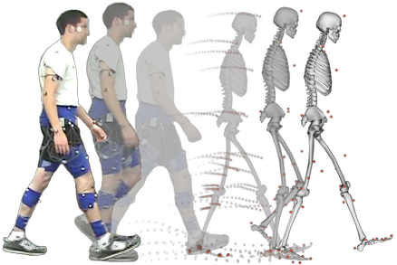
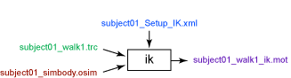

The Inverse Kinematics (IK) Tool steps through each time frame of experimental data and positions the model in a pose that "best matches" experimental marker and coordinate data for that time step. This "best match" is the pose that minimizes a sum of weighted squared errors of markers and/or coordinates. Obtaining accurate results from the IK Tool is essential for using later tools like Static Optimization, Residual Reduction Algorithm, and Computed Muscle Control.
To launch the IK Tool, select Tools → Inverse Kinematics from the OpenSim main menu bar.

Inverse Kinematics (IK) Tool Overview. Experimental markers are matched by model markers throughout the motion by varying the joint angles (generalized coordinates) through time.
Overview

Inputs and Outputs of the IK Tool. Experimental data are shown in green; OpenSim files (.osim) are shown in red; settings files are shown in blue.
The file names are examples that can be found in the Models/Gait2354_Simbody directory installed with the OpenSim distribution. |
Inputs
The primary inputs to IK are the following files:
- subject01_simbody.osim: A subject-specific OpenSim model generated by scaling a generic model with the Scale Tool or by other means, along with an associated marker set containing adjusted virtual markers.
- subject01_walk1.trc: Experimental marker trajectories for a trial obtained from a motion capture system, along with the time range of interest.
- gait2354_Setup_IK.xml: A file containing all the settings information for the IK tool, including marker weightings (IK tasks). As in the Scale Tool, marker weights are relative and determine how "well" the virtual markers track experimental markers (a larger weight for a given marker will mean less error–the distance between the virtual and experimental representations of a marker–for that marker).
- subject01_coords.mot (optional): Experimental generalized coordinate values (joint angles) for a trial obtained from alternative motion capture devices or other specialized algorithms. You can optionally specify relative coordinate weights in the Tasks file, if joint angles are known a priori.
Outputs
- subject01_walk1_ik.mot: A motion file containing the generalized coordinate trajectories (joint angles and/or translations) computed by IK.
Best Practices and Troubleshooting
Data Collection and Other Preparation:
- When collecting experimental data, place three non-collinear markers per body segment that you want to track. You need at least three markers to track the 6-degree-of-freedom motion (position and orientation) of a body segment.
- Place markers on anatomical locations with minimum skin/muscle motion.
- These are just a few tips. Also review our full guide to Collecting Experimental Data.
Inverse Kinematics Settings:
- Weight "motion" segment markers (from a triad placed on the thigh segment, for example) more heavily than anatomical markers affixed to landmarks like the greater trochanter and the acromion, which can be helpful for scaling, but are influenced by muscle and other soft tissue movements during motion.
- Relative marker weightings are more important than their absolute values. Therefore, a weighting of 10 vs. 1 is 10 times more important, whereas 20 vs. 10 is only twice as important. Markers are not necessarily tracked better because they both have higher weightings.
- See How Inverse Kinematics Works and How to Use the IK Tool for more information about IK settings.
Evaluating your Results:
- Total RMS and maximum marker errors are reported in the "Messages" window. Use these values to guide changes in weightings or, if necessary, to redo marker placement and possibly scaling. Maximum marker error should generally be less than 2-4 cm, and RMS under 2 cm is achievable. These guidelines will vary depending on the nature of the model and the motion being examined.
- If using coordinates from a motion capture system, make sure that the joint/coordinate definitions match—otherwise, you may cause more harm than good.
- Compare your results to similar data reported in the literature. Your results from an unimpaired average adult should generally be within one standard deviation.
- If you are unsatisfied with the results, recheck the results of scaling.
Next: How Inverse Kinematics Works
Home: Inverse Kinematics
{kind=link}
{kind=link}